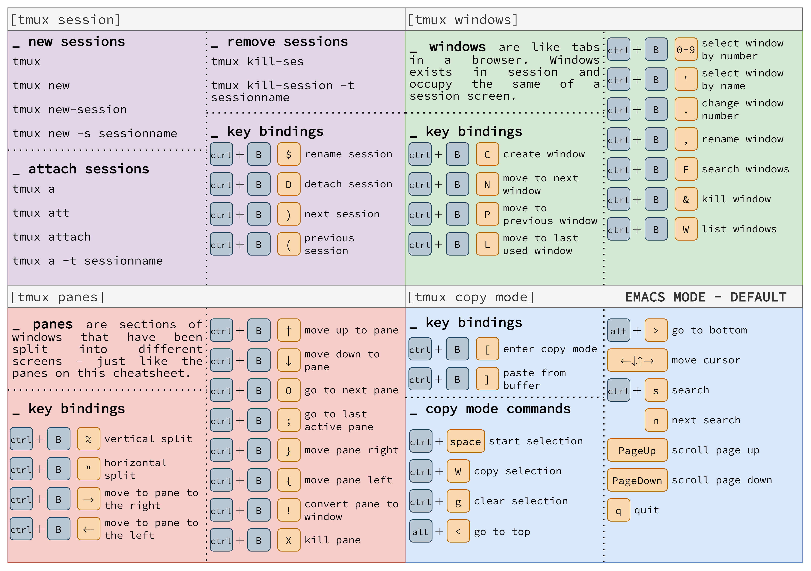

![]()
The solution is to set the default terminal provider on the remote settings to be tmux, and have it attach to either an existing session named main, or create a new one if it doesn’t exist.
Tmux shortcuts

Basic workflow
- Create session
- Setup session
- Work
- Detach
- Attach
- Work
- To 4
Useful Aliases
alias t="tmux"
alias ta="t a -t"
alias tls="t ls"
alias tn="t new -t"Now we can run any tmux commands by just typing t (saved 3 characters and much cognitive load! Yeah!), create a new session with t {session-name}, attach to an existing session with ta {session-name} and list all your sessions with tls.
Single session
- Add the below snippet to your remote settings in VSCode.
{
"terminal.integrated.profiles.linux": {
"tmux": {
"path": "/usr/bin/tmux",
"args": [
"new-session",
"-A",
"-s",
"main"
],
},
},
"terminal.integrated.defaultProfile.linux": "tmux",
}Session Per Workspace
- Use vscode variables to make one tmux-session per project,
{
"terminal.integrated.profiles.linux": {
"tmux": {
"path": "/usr/bin/tmux",
"args": [
"new-session",
"-A",
"-s",
"vscode-${workspaceFolderBasename}"
],
},
},
"terminal.integrated.defaultProfile.linux": "tmux",
}Remote setting
// 2023-04-10 updated
{
"r.rterm.linux": "/home/zhonggr/.local/bin/radian",
// "r.rterm.linux": "/bin/R",
"r.rpath.linux": "/bin/R",
"r.alwaysUseActiveTerminal": true,
"r.bracketedPaste": true,
"r.sessionWatcher": true,
// "terminal.integrated.defaultProfile.linux": "R Terminal",
// "terminal.integrated.defaultProfile.linux": "bash",
"r.plot.useHttpgd": true,
"editor.tabCompletion": "on",
"editor.acceptSuggestionOnEnter": "off",
"terminal.integrated.profiles.linux": {
"tmux": {
"path": "/usr/bin/tmux",
"args": [
"new-session",
"-A",
"-s",
"main"
],
},
},
"terminal.integrated.defaultProfile.linux": "tmux"
}source-file ~/.tmux.conf